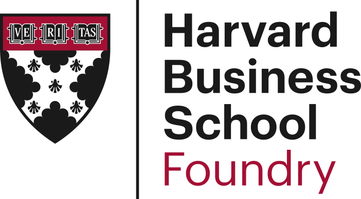

HBS Foundry · Founder Resources
Explore session recaps, founder questions, and practical next steps from the HBS Foundry community.
Browse the Library
Use these recaps to revisit live sessions and turn the discussion into action for your venture.
Find activation steps, answers to common questions, and practical timing guidance for Foundry perks.
Read the Perks Guide FundraisingUnderstand venture capital, identify aligned investors, and communicate your opportunity with clarity.
Read the Session RecapUse These Resources
Each recap highlights the ideas, questions, and practical actions founders can use after the session. Return here as the resource library grows.
Questions about a session or a resource? Email hbsfoundrysupport@hbs.edu.